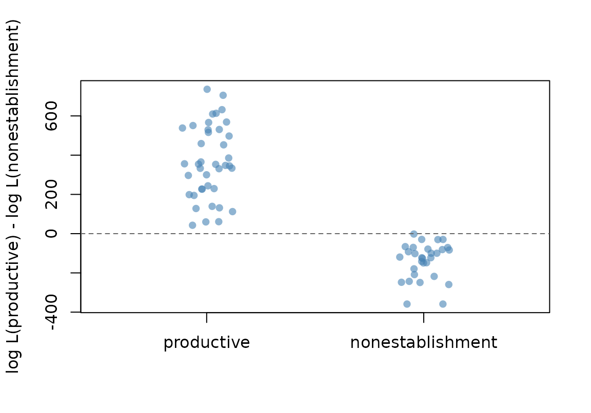
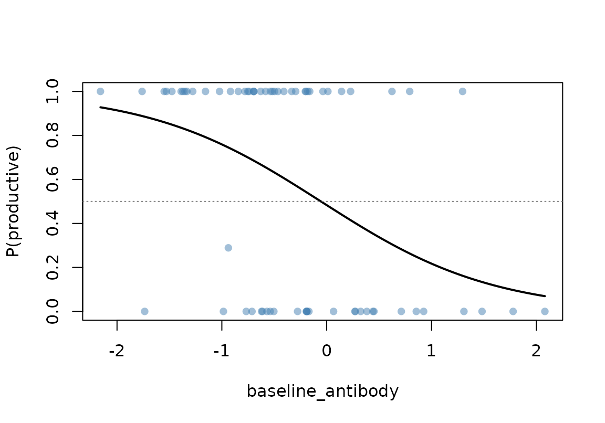

Introduction to MBMM: fitting a Mechanistic Bayesian Mixture Model
Source:vignettes/mbmm-intro.Rmd
mbmm-intro.RmdWhat MBMM does
The Mechanistic Bayesian Mixture Model (MBMM) combines longitudinal mechanistic models with a covariate-linked latent-class model.
For each subject, MBMM estimates posterior probabilities of belonging to latent biological states such as:
- productive infection versus non-establishment or transient/abortive detection; or
- boost-responsive versus weak/stable antibody kinetics.
MBMM proceeds in three stages:
- A mechanistic trajectory model is fitted to eligible reference donors using Approximate Bayesian Computation (ABC).
- Each study subject is scored against one or more reference models, producing a class-conditional log-likelihood for each latent state.
- The class likelihoods are linked to subject-level covariates through a logistic or multinomial gate model.
The gate is fitted by directly maximizing the observed-data marginal likelihood. This is the same likelihood targeted by an EM implementation, but direct optimization avoids explicitly iterating between E- and M-steps.
The package supports two common scoring structures:
- Bank versus bank: every latent class is represented by a mechanistic trajectory bank.
- Productive infection versus analytic non-establishment: the productive class is represented by a mechanistic bank, while non-establishment is represented by a low-level analytic observation model.
This vignette demonstrates the second structure using simulated correlate-of-protection data.
Main ingredients
A typical MBMM analysis uses the following ingredients.
| # | Ingredient | Description | Main functions |
|---|---|---|---|
| 1 | simulate_fn(theta_row, times) |
Mechanistic trajectory model returning predicted values on the natural scale |
mbmm_abc_fit(), mbmm_predict_bank()
|
| 2 | prior_sample_fn(n) |
Function drawing candidate kinetic-parameter vectors from the ABC prior |
mbmm_abc_fit(), mbmm_abc_bank()
|
| 3 | obs_list |
Named list of per-subject data frames containing time,
y, and optionally target,
censored, and lod
|
scoring functions and wrappers |
| 4 | sigma |
Measurement-error SD on the scale used by the Gaussian likelihood | mbmm_class_loglik() |
| 5 |
data and formula
|
Subject-level covariate data and the gate formula | mbmm_fit_gate() |
The package provides ABC rejection sampling, equal-donor bank pooling, leave-one-donor-out scoring, censored-observation likelihoods, gate fitting, likelihood-ratio tests, permutation tests, posterior class probabilities, and fitted gate-threshold summaries.
Simulated correlate-of-protection study
Real trial data are not included with the package. Instead, this
vignette uses mbmm_simulate_cop_demo(), which generates a
small synthetic study.
Each subject has:
- a standardized baseline antibody measurement;
- an unobserved productive-infection state;
- a sparse longitudinal viral-load trajectory; and
- an indicator identifying whether the subject is eligible to contribute to the productive-infection reference bank.
The probability of productive infection depends on baseline antibody through a logistic gate. Higher antibody is protective, so the true gate coefficient is negative.
Productive-infection trajectories are generated with
mbmm_example_eclipse_simulate(). Subjects who do not
establish productive infection have low-level observations near or below
the assay limit of detection.
demo <- mbmm_simulate_cop_demo(
n_subjects = 70,
prevalence = 0.40,
beta_true = -1.3,
n_bank_donors = 10,
sigma_obs = 0.30,
lod = 3,
seed = 20260722
)
length(demo$obs_list)
#> [1] 70
sum(demo$truth$Z_true)
#> [1] 40
sum(demo$truth$bank_eligible)
#> [1] 10
bank_ids <- demo$truth$id[
demo$truth$bank_eligible
]
demo$obs_list[[bank_ids[1]]]
#> time y censored lod
#> 1 0 2.070006e+00 TRUE 3
#> 2 2 3.269032e+00 FALSE 3
#> 3 4 3.370151e+01 FALSE 3
#> 4 6 4.030050e+03 FALSE 3
#> 5 9 2.659649e+06 FALSE 3
#> 6 12 2.265005e+05 FALSE 3
#> 7 16 2.743212e+03 FALSE 3
#> 8 21 8.105020e+00 FALSE 3The simulation returns the two principal subject-level objects needed below:
head(demo$covariates)
#> id baseline_antibody
#> 1 SUBJ001 -0.4649412
#> 2 SUBJ002 -0.5041271
#> 3 SUBJ003 -0.1881837
#> 4 SUBJ004 2.0812050
#> 5 SUBJ005 1.3091380
#> 6 SUBJ006 0.1419518
head(demo$truth)
#> id Z_true bank_eligible beta_true delta_true p_true V0_true
#> 1 SUBJ001 1 FALSE 6.862801e-07 1.1784421 6.287004 2.118119
#> 2 SUBJ002 0 FALSE NA NA NA NA
#> 3 SUBJ003 0 FALSE NA NA NA NA
#> 4 SUBJ004 0 FALSE NA NA NA NA
#> 5 SUBJ005 0 FALSE NA NA NA NA
#> 6 SUBJ006 1 FALSE 9.908673e-07 0.8485167 8.924633 7.822832
#> offset_true
#> 1 3.354036
#> 2 NA
#> 3 NA
#> 4 NA
#> 5 NA
#> 6 3.632269Step 1: ABC-fit productive-infection donors
Only subjects marked as bank_eligible are used to
construct the productive-infection reference bank.
The example functions
provide the mechanistic simulator and prior sampler. In a real application, these would be replaced by the user’s own mechanistic model and scientifically informed prior.
For vignette speed, we use only 600 prior draws and retain 60 particles per donor. A substantive analysis should use a much larger prior sample. For example, the manuscript analyses commonly used 10,000 draws with a 2.5% acceptance fraction.
abc_particles <- mbmm_abc_bank(
obs_list = demo$obs_list[bank_ids],
simulate_fn = mbmm_example_eclipse_simulate,
prior_sample_fn = mbmm_example_eclipse_prior,
n_draws = 600,
n_keep = 60,
seed = 1,
verbose = FALSE
)
head(abc_particles)
#> beta delta p V0 offset distance id
#> 1 8.005738e-07 1.212975 9.180566 1.298905 2.067865 0.1914595 SUBJ008
#> 2 9.795254e-07 1.129902 11.725936 3.275204 3.216356 0.2861999 SUBJ008
#> 3 1.047546e-06 1.137089 11.684988 4.043183 3.366723 0.3405021 SUBJ008
#> 4 1.585831e-06 1.000753 13.655206 5.360543 4.355922 0.3534076 SUBJ008
#> 5 1.456275e-06 1.136733 5.338986 1.653211 1.920995 0.3755938 SUBJ008
#> 6 6.662666e-07 1.109471 14.918006 6.780192 3.438323 0.3786913 SUBJ008
table(abc_particles$id)
#>
#> SUBJ008 SUBJ017 SUBJ020 SUBJ027 SUBJ035 SUBJ043 SUBJ058 SUBJ062 SUBJ063 SUBJ068
#> 60 60 60 60 60 60 60 60 60 60Each accepted row contains:
- a donor ID;
- a candidate kinetic-parameter vector;
- its ABC distance; and
- an accepted-particle identifier.
Step 2: pool donors and predict reference curves
mbmm_pool_bank() creates a pooled bank with equal
representation from each eligible donor. Equal donor weighting prevents
donors with larger or more concentrated ABC samples from dominating the
class likelihood.
pooled_productive <- mbmm_pool_bank(
particles = abc_particles,
seed = 1
)
nrow(pooled_productive)
#> [1] 600
table(pooled_productive$id)
#>
#> SUBJ008 SUBJ017 SUBJ020 SUBJ027 SUBJ035 SUBJ043 SUBJ058 SUBJ062 SUBJ063 SUBJ068
#> 60 60 60 60 60 60 60 60 60 60The pooled parameter particles are then converted into predicted curves at the study visit times.
visit_grid <- c(
0, 2, 4, 6, 9, 12, 16, 21
)
pred_productive <- mbmm_predict_bank(
bank = pooled_productive,
simulate_fn = mbmm_example_eclipse_simulate,
times = visit_grid
)
head(pred_productive)
#> id bundle_id time pred
#> 1 SUBJ008 1 0 3.033762e+00
#> 2 SUBJ008 1 2 3.033762e+00
#> 3 SUBJ008 1 4 1.710797e+01
#> 4 SUBJ008 1 6 7.139596e+04
#> 5 SUBJ008 1 9 1.213501e+06
#> 6 SUBJ008 1 12 4.213024e+04Each unique combination of donor ID and bundle_id
represents one complete mechanistic draw.
Step 3: fit the productive-infection MBMM
The non-establishment class does not require an artificial second
trajectory bank. Instead, mbmm_productive_infection()
combines:
- a productive-infection mechanistic bank; and
- an analytic low-level likelihood for non-establishment.
The expected natural-scale measurement under non-establishment is set
to a fraction of the observation-specific LOD. The default
lod_fraction = 0.5 corresponds to an expected value of LOD
divided by two.
The observations and predicted curves remain on the natural scale.
Setting log_scale = FALSE tells the likelihood functions to
perform the required log10 transformation internally. Therefore,
sigma = 0.30 is interpreted as an SD of 0.30 on the log10
scale.
fit <- mbmm_productive_infection(
obs_list = demo$obs_list,
productive_bank = pred_productive,
sigma = 0.30,
formula = ~ baseline_antibody,
data = demo$covariates,
productive_class = "productive",
nonestablishment_class = "nonestablishment",
lod_fraction = 0.5,
ridge = 1e-4,
penalty = "ridge",
id_col = "id",
donor_col = "id",
bundle_col = "bundle_id",
log_scale = FALSE,
donor_weighting = "equal",
loo_productive = TRUE,
verbose = FALSE
)
fit
#> MBMM fit
#> classes: productive vs nonestablishment
#> scoring: productive-bank-versus-analytic-nonestablishment
#> n subjects scored: 70
#> MBMM gate model
#> classes: productive vs nonestablishment
#> method: direct-marginal-optimization
#> penalty: ridge
#> ridge: 1e-04
#> n subjects: 70
#> optimizer convergence: full = 0 , null = 0
#> unpenalized logLik: full = -340.998 , null = -347.672
#> LRT = 13.35 on df = 1 -> p = 0.0002588
#>
#> Gate coefficients:
#> term estimate odds_ratio
#> (Intercept) -0.06704833 0.9351500
#> baseline_antibody -1.21523410 0.2966406The printed output includes:
- the two latent classes;
- the number of scored subjects;
- optimizer convergence codes;
- the fitted gate coefficients;
- the unpenalized observed-data likelihood-ratio test; and
- a summary of posterior MAP class assignments.
The small ridge penalty stabilizes coefficient estimation. The reported likelihood-ratio statistic is evaluated using the unpenalized observed-data log-likelihood.
Interpreting the gate coefficient
fit$gate$coef
#> term estimate odds_ratio
#> 1 (Intercept) -0.06704833 0.9351500
#> 2 baseline_antibody -1.21523410 0.2966406The first class is productive, so the fitted coefficient
describes how baseline antibody changes the log odds of productive
infection.
The simulated association is protective. Therefore, the estimated
baseline_antibody coefficient should generally be
negative:
estimated_beta <- fit$gate$coef$estimate[
fit$gate$coef$term == "baseline_antibody"
]
c(
estimated = estimated_beta,
simulated = demo$gate_truth$beta
)
#> estimated simulated
#> -1.215234 -1.300000Sampling variation and imperfect latent-state recovery mean that the fitted coefficient will not exactly equal the simulation parameter.
Gate threshold
mbmm_gate_threshold() calculates the focal covariate
value at which the fitted prior probability of the first class reaches a
selected level.
For the default level of 0.5 and an intercept-plus-linear-covariate model, this is the fitted 50% gate threshold.
threshold_point <- mbmm_gate_threshold(
fit = fit$gate,
focal = "baseline_antibody",
level = 0.5
)
threshold_point
#> [1] -0.05517318Here, baseline antibody is already standardized, so the result is on the standardized covariate scale.
This quantity is a model-based gate summary. It is not automatically a clinical cutoff or a neutralization-assay PD50.
Bootstrap threshold uncertainty
mbmm_bootstrap_gate_threshold() resamples subjects,
refits the gate, and recalculates the threshold.
For vignette speed, only 30 bootstrap samples are used below. A substantive analysis would generally use at least 1,000 replicates.
Because baseline_antibody is already standardized, no
back-transformation is needed:
threshold_boot <- mbmm_bootstrap_gate_threshold(
logL = fit$logL,
formula = ~ baseline_antibody,
data = demo$covariates,
focal = "baseline_antibody",
classes = fit$classes,
level = 0.5,
center = 0,
scale = 1,
transform = "identity",
n_boot = 30,
ridge = 1e-4,
penalty = "ridge",
id_col = "id",
seed = 2,
verbose = FALSE
)
threshold_boot
#> MBMM gate-threshold summary
#> focal covariate: baseline_antibody
#> probability level: 0.5
#> threshold, model scale: -0.05517
#> threshold, original scale: -0.05517
#> 95.0% CI, original scale: [-0.6839, 0.3454]
#> bootstrap thresholds retained: 30 of 30
#> extrapolated bootstrap thresholds: 0 %The output reports:
- the point threshold;
- the percentile confidence interval;
- the number of successful bootstrap thresholds; and
- the percentage of bootstrap thresholds outside the observed focal-covariate range.
The full bootstrap draws are available in:
head(threshold_boot$bootstrap)
#> replicate threshold_model threshold_original fit_success optimizer_success
#> 1 1 0.11345439 0.11345439 TRUE TRUE
#> 2 2 0.28633103 0.28633103 TRUE TRUE
#> 3 3 0.06853768 0.06853768 TRUE TRUE
#> 4 4 -0.20558727 -0.20558727 TRUE TRUE
#> 5 5 0.50104045 0.50104045 TRUE TRUE
#> 6 6 -0.25315780 -0.25315780 TRUE TRUE
#> extrapolated
#> 1 FALSE
#> 2 FALSE
#> 3 FALSE
#> 4 FALSE
#> 5 FALSE
#> 6 FALSE
threshold_boot$diagnostics
#> $n_requested
#> [1] 30
#>
#> $n_fit_success
#> [1] 30
#>
#> $n_optimizer_success
#> [1] 30
#>
#> $n_threshold_success
#> [1] 30
#>
#> $threshold_success_rate
#> [1] 1Recovery against the simulation truth
The latent productive-infection state is not used during model fitting. Because the data are simulated, however, we can compare posterior MAP classes with the true generating states.
truth <- demo$truth$Z_true[
match(fit$logL$id, demo$truth$id)
]
predicted <- ifelse(
fit$gate$posterior$map_class == "productive",
1,
0
)
table(
truth = truth,
mbmm = predicted
)
#> mbmm
#> truth 0 1
#> 0 30 0
#> 1 0 40
mean(
truth == predicted
)
#> [1] 1Posterior probabilities provide more information than the MAP classification. They can be inspected directly:
head(fit$gate$posterior)
#> id gate_prior_productive posterior_productive map_class
#> 1 SUBJ001 0.62198075 1.000000e+00 productive
#> 2 SUBJ002 0.63311045 5.180329e-62 nonestablishment
#> 3 SUBJ003 0.54032198 1.694893e-156 nonestablishment
#> 4 SUBJ004 0.06938341 1.387302e-30 nonestablishment
#> 5 SUBJ005 0.16003637 2.747272e-157 nonestablishment
#> 6 SUBJ006 0.44039650 1.000000e+00 productiveDiagnostic plots
The fitted MBMM object can be plotted to inspect how strongly the class-conditional trajectory likelihoods distinguish subjects.
plot(fit)
The gate plot displays fitted prior class probability across the observed covariate range together with subject-level posterior probabilities.
plot(fit$gate)
These plots answer related but distinct questions:
- the bank-likelihood diagnostic asks whether the longitudinal trajectories distinguish the latent classes; and
- the gate plot asks how the fitted class probability changes with the subject-level covariate.
Bank-versus-bank analyses
The productive-infection wrapper is appropriate when one class is represented by a mechanistic bank and the second class has an analytic observation model.
When every class has its own mechanistic bank, use the general
mbmm() wrapper instead:
fit_two_banks <- mbmm(
obs_list = obs_list,
bank_pred_list = list(
responsive = pred_responsive,
stable = pred_stable
),
sigma = sigma,
formula = ~ treatment_arm,
data = covariate_data,
classes = c("responsive", "stable"),
donor_weighting = "equal",
loo = TRUE,
penalty = "ridge",
ridge = 1e-4,
log_scale = TRUE,
verbose = FALSE
)This structure is useful for applications such as boost-responsive versus weak/stable antibody kinetics.
Multiple targets
For multi-target longitudinal measurements, each accepted mechanistic draw must contain a complete and coherent bundle across all targets.
mbmm_join_targets() constructs such bundles while
preserving donor identity:
joint_bank <- mbmm_join_targets(
target_banks = list(
target_A = bank_A,
target_B = bank_B,
target_C = bank_C
),
n_bundles_per_donor = 200,
seed = 1
)The joint bank can then be predicted and scored using target-specific measurement-error SDs.
Adapting the workflow to real data
To use MBMM with a real study, replace each illustrative component in turn.
Mechanistic simulator
Write a function with the interface:
simulate_fn(theta_row, times)It must return one predicted value for each requested time.
The simulator may use:
-
mbmm_rk4_solve()for dependency-free numerical integration; -
deSolve::ode()for more general ODE systems; or - a closed-form mechanistic trajectory.
ABC prior
The prior sampler should return a data frame containing one parameter draw per row.
Priors should be scientifically justified using external data, prior studies, or biologically plausible ranges.
Subject observations
Each element of obs_list should be a data frame
containing at least:
time
yOptional columns include:
target
censored
lodUse target when subjects have multiple longitudinal
biomarkers. Supply censored and lod when
observations are subject to assay censoring.
Measurement error
sigma is the Gaussian measurement-error SD on the
likelihood scale.
It may be:
- fixed using assay-validation information;
- estimated from residuals between observations and fitted mechanistic curves; or
- specified separately for multiple targets.
Gate covariates
The gate formula may include treatment arm, baseline antibody, age, or other subject-level predictors.
For example:
~ baseline_antibody
~ treatment_arm
~ baseline_antibody + ageThe threshold utility currently assumes that the focal covariate enters the binary gate linearly and additively.
Separation and gate stabilization
When the class likelihoods distinguish subjects almost perfectly, the unpenalized gate estimates can become numerically unstable. This resembles complete or quasi-complete separation in ordinary logistic regression.
The package supports:
penalty = "ridge"
penalty = "none"A small ridge penalty is the default and is used only to stabilize
parameter estimation. The likelihood-ratio test reported by
mbmm_fit_gate() uses the unpenalized observed-data marginal
log-likelihood evaluated at the fitted full and null estimates.
The amount of ridge stabilization can be controlled through:
ridge = 1e-4Users should report the selected stabilization setting and examine optimizer convergence when the inferred classes are nearly separated.
Further documentation
See:
?mbmm_abc_fit
?mbmm_abc_bank
?mbmm_pool_bank
?mbmm_class_loglik
?mbmm_productive_infection
?mbmm_fit_gate
?mbmm_gate_threshold
?mbmm_bootstrap_gate_thresholdA standalone script corresponding to this workflow may also be distributed under:
system.file(
"examples",
"01_simulated_correlate_of_protection.R",
package = "mbmm"
)